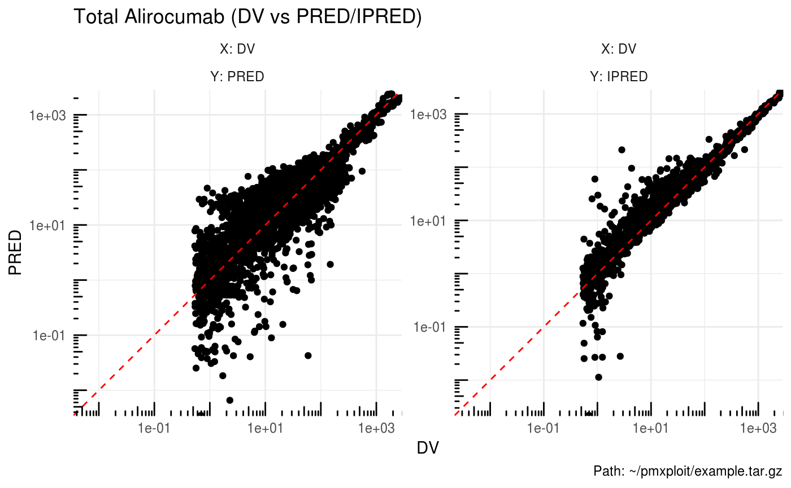

The goal of pmxploit is to facilitate the post-processing analysis of non-linear mixed effects models developed with NONMEM software.
It provides helper functions for visualizing and summarizing population analyses results, detecting outliers, computing numerical quality criteria and comparing multiple run results.
Requirements
pmxploit can read runs executed with NONMEM 7.2 and higher (with results data contained in an xml file).
Installation
# Install the latest version from GitHub
# install.packages('devtools')
devtools::install_github('pnolain/pmxploit')Getting started
library(pmxploit)
# load a NONMEM run from its location
run <- load_nm_run("~/pmxploit/example")
# or from an archive file
# run <- load_nm_run("~/pmxploit/example.tar.gz")Diagnostic plots
plot_dv_vs_predictions(run, compartment = 2L, predictions = c("PRED", "IPRED"),
x_scale = "log", y_scale = "log")
plot_residuals(run, compartment = 2L, residuals = "CWRES", idv = c("TIME", "PRED"))
run %>%
group_by(CMT) %>%
plot_residuals(compartment = c(2L, 3L), residuals = "CWRES", idv = c("TIME", "PRED"))Parameters
plot_convergence(run, parameters = "theta")run %>%
summarize_thetas()
#> # A tibble: 13 x 7
#> id name estimate se rse ci_low ci_up
#> <chr> <chr> <dbl> <dbl> <dbl> <dbl> <dbl>
#> 1 THETA1 TVCL 0.172 0.0152 0.0884 0.141 0.202
#> 2 THETA2 TKON 559 NA NA NA NA
#> 3 THETA3 TKIN 0.124 0.00222 0.0180 0.119 0.128
#> 4 THETA4 TKDE 1.35 0.0375 0.0279 1.27 1.42
#> 5 THETA5 TVQ 0.500 0.0286 0.0571 0.443 0.558
#> 6 THETA6 TVV1 3.23 0.204 0.0632 2.82 3.63
#> 7 THETA7 TVV2 2.61 NA NA NA NA
#> 8 THETA8 TVKA 0.638 0.0468 0.0733 0.544 0.731
#> 9 THETA9 TVF 0.590 0.0239 0.0406 0.542 0.638
#> 10 THETA10 TVEP 0.275 0.00151 0.00548 0.272 0.278
#> 11 THETA11 TVEA 0.582 0.0224 0.0385 0.537 0.627
#> 12 THETA12 TVLAG 0.0298 0.00110 0.0369 0.0276 0.0320
#> 13 THETA13 COV1 1.56 0.0851 0.0544 1.39 1.73run %>%
summarize_omega()
#> # A tibble: 7 x 8
#> eta1 eta2 estimate se rse ci_low ci_up cv
#> <chr> <chr> <dbl> <dbl> <dbl> <dbl> <dbl> <dbl>
#> 1 ETCL ETCL 0.279 0.0761 0.273 0.130 0.428 0.568
#> 2 EKIN EKIN 0.0581 0.00462 0.0796 0.0490 0.0672 0.245
#> 3 EKDE EKDE 0.171 0.0164 0.0963 0.138 0.203 0.431
#> 4 ETQ ETQ 0.0691 0.0298 0.431 0.0108 0.127 0.267
#> 5 ETV1 ETV1 0.0990 0.0166 0.167 0.0665 0.132 0.323
#> 6 ETKA ETKA 0.464 0.0495 0.107 0.367 0.561 0.769
#> 7 ETF ETF 0.290 0.0717 0.248 0.149 0.430 0.580run %>%
summarize_shrinkage(type = "ETA")
#> # A tibble: 9 x 3
#> type parameter shrinkage
#> <chr> <chr> <dbl>
#> 1 ETA ETCL 0.626
#> 2 ETA EKON 1
#> 3 ETA EKIN 0.204
#> 4 ETA EKDE 0.265
#> 5 ETA ETQ 0.755
#> 6 ETA ETV1 0.327
#> 7 ETA ETV2 1
#> 8 ETA ETKA 0.477
#> 9 ETA ETF 0.438